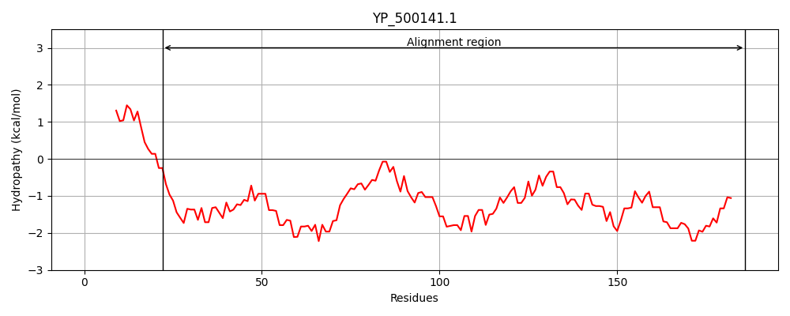
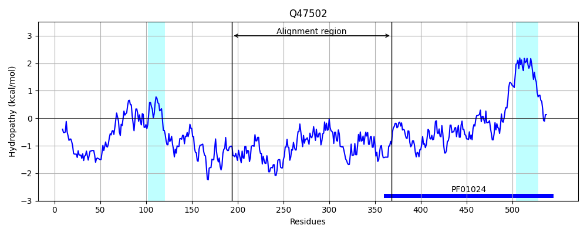
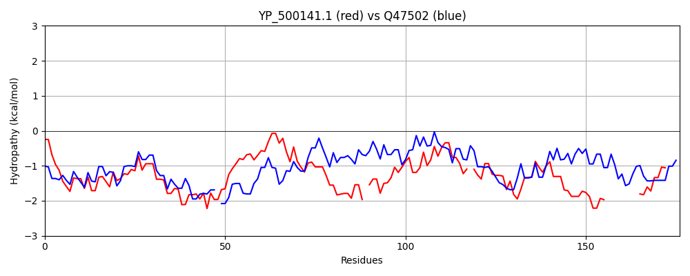

Hit Accession: Q47502
Hit TCID: 1.C.1.2.1
Hit Description: gnl|BL_ORD_ID|13714 gnl|TC-DB|Q47502|1.C.1.2.1 Colicin K - Escherichia coli.
Mach Len: 176
e:0.000000
Query TMS Count : 0
Hit TMS Count: 2
TMS-Overlap Score: 0.000000
Predicted Substrates:CHEBI:24870;ion
BLAST Alignment:
Score: 125 , Bit scores: 52 bits, E-value: 1.9e-08, Alignment length: 176, Percentage identity: 23
Query: 22 LAPLEEKTTDLREDNHQLKLDIQELNQQISDSKSKIKGLEKDKENSKKTASNNTKIKLMNVTSTYYDKVAKALKSYNDIEKDVSKNKGD-KNVQSKLNQISNDIQSAHTSYKDAIDGL-SLSDDDKKTSKNIDKLNSDLNHAFDDIKNGYQNKDKK---------QLTKGQQALSK 186
+ LE +L++ ++QL DI +LN + +SKI + K KE +K A N ++ + VA+A K + + +++K + D ++ Q+ +++++ ++++A S + G D KK + ++ ++ + +++KN +D K +L + Q AL K
Sbjct: 194 ITDLERDVDELQKKSNQLDADISKLNSYKNTLQSKIGDVNKQKEAEEK-ARENAEVAEHETLNEEKQAVAEAEKRLAEAKAELAKAESDVQSKQATVSRVAGELENAQKSVDVKVTGFPGWRDVQKKLQRQLEAKQAEYSAVENELKNAVSFRDGKAAEVKEAEQKLKEAQDALEK 368 | Protein Hydropathy Plots: |
|---|
|  |  |
Pairwise Alignment-Hydropathy Plot:
|
|---|
|  |